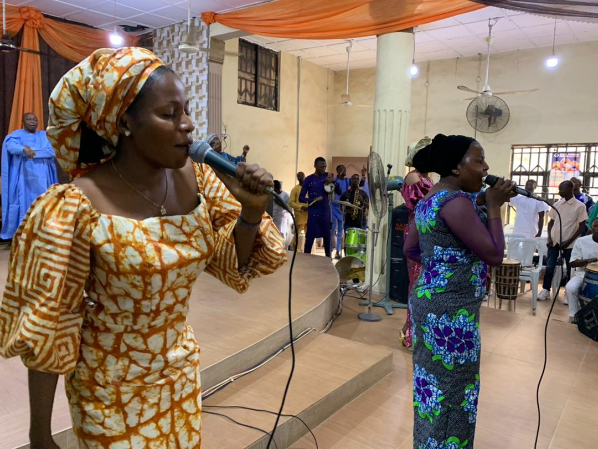

Departments in the Church
Gospel Apostolic Church aims at disseminating the gospel of Christ far and wide its environs and with like minds, departments come together to enhance the work of the Lord .
-

Sunday School Teachers Department
Presided by Pastor Gideon Ogudu, Sunday School Teachers always have their meetings every second Sunday of the month as they discuss and meditate on Sunday School lessons before the classes. Members are also encouraged to join.
-
Soul Winners Department
Presided by Pastor Iyekhor, Soul Winners Department is open to all members of the church, passionate about the growth of the church. They organize door to door evangelism and always have their meetings every last Sunday of the month
-

Choir Department
The Choir department of Gospel Apostolic Church,Adigbe is headed by Mrs Balogun B.O and the choristers show a high level of animousity as they minister very inspirational songs and organise events amongst themselves. They observe fasting and prayer every first Saturday of each month and they encourage members to join the department that they may together exalt the name of the Lord. Meetings are held every Saturday at 3pm.
-

Children Department
Training up a child in the way of the Lord has been an important tenet in GAC and with the help of experienced and dedicated teachers, the children department has thrived tremendously. They occassionaly showcase what they have learnt to the church and this has further strengthened the reliability of parents to the children department.
-
Youth Department
The Youth Department is headed by Mr. Ayo Shorungbe and assisted by Mr. Ajayi. The duo alongside other youths in the church work tirelessly to see the progress and establishment of relevance in the church through teamwork, donations to church activities and organising seminars, symposiums and even praise day which was held last August. You can be a youth with a difference when you contribute to the growth of the department and the church at large. Meetings are held when communicated to by the excos.